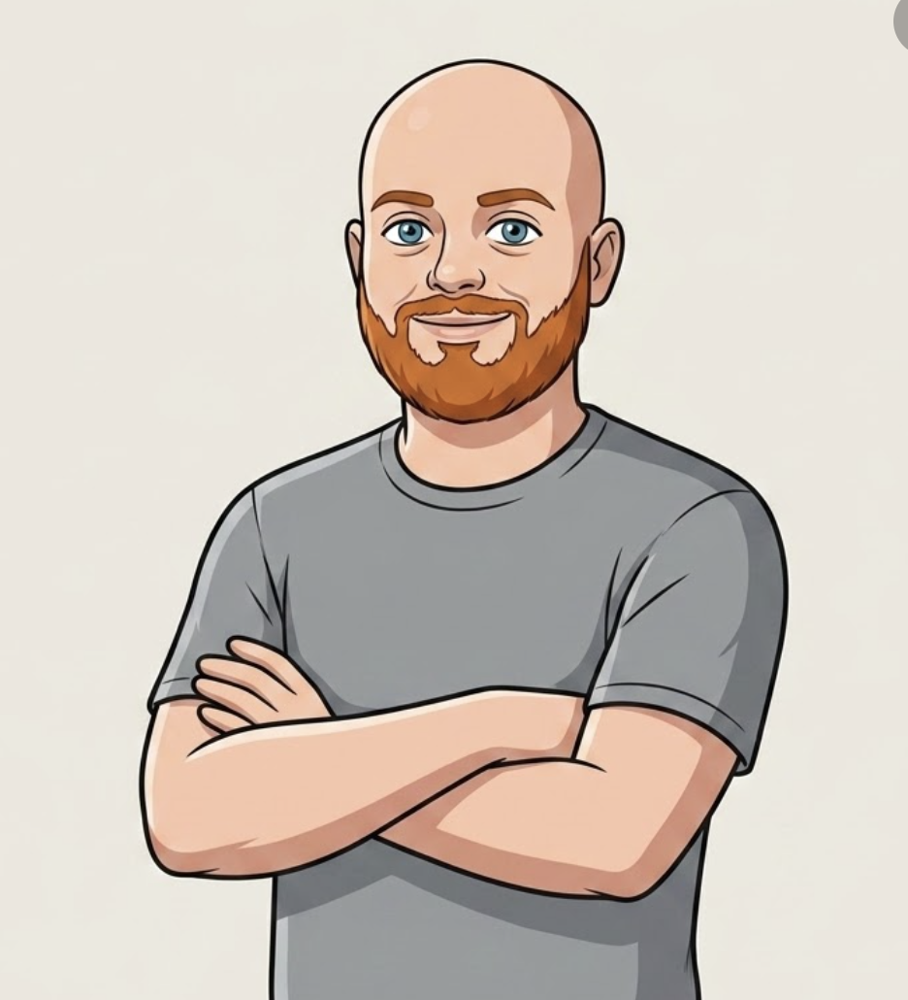

Leading teams to build
human-centered systems.
I own product strategy and platform governance for Rackspace's content and digital ecosystem. Most of my energy goes into turning fragmented, unsustainable systems into ones that scale, and making sure the people running them day to day can actually own them.

- •Manager, User Experience Design, Rackspace Technology, 2021–present
- •Own roadmap, budget, and vendor relationships for Rackspace's content and digital platforms
- •Lead a team spanning design, content, and engineering
- •17 years at Rackspace, 14 of them in product and UX roles
- •Rebuilt an enterprise content platform now run by two non-technical writers instead of a team of twelve
Commerce & Platform
Self-service buying experiences, catalog architecture, and enrollment funnels at enterprise scale.
Design Systems
Component libraries, AI-assisted UI tooling, and the infrastructure that keeps teams consistent at scale.
Team Leadership
Building design orgs, establishing quality standards, and growing designers who lead without a title.
AI Workflow Design
Designing how people work alongside AI, as users, practitioners, and the teams building those tools.
Designing for
business impact
Over the last several years at Rackspace, I've led product and design across commerce systems, content platforms, and AI tooling.
That's included rebuilding an enterprise content platform after its team was eliminated, and building the governance framework, schema registries, AI guidelines, that keeps AI-generated output on-brand at scale. I work best when I'm close to both the product decisions and the technical constraints, that's where the problems that actually matter tend to live.
Selected work
I have over 2 dozen case-studies, but these are a few of my favorites.
Rebuilt an enterprise documentation platform after its 12-person team was eliminated, redesigning the content model and workflow so two non-technical writers could run it independently.
Guiding customers to create accurate tickets using AI, reducing back-and-forth and reducing resolution time.
Transforming brand guidelines into structured prompt formats and guardrails for generative systems.
Accelerating problem-solving by surfacing context and recommending secure, compliant solutions.
Standardizing UI component generation for AI-powered IDEs to prevent drift and maintain quality.
Open to product & UX leadership roles